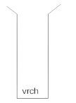
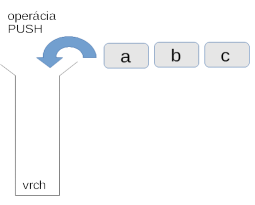
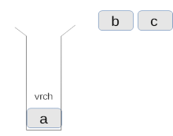
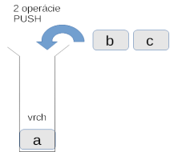
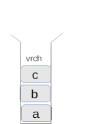
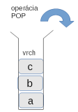
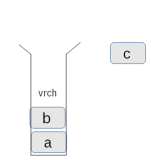
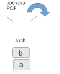
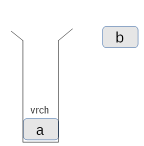

15. Zásobníky a rady¶
Zoznámime sa s dvoma novými jednoduchými dátovými štruktúrami, ktoré sú veľmi dôležité pri realizácii mnohých algoritmov.
Obe tieto dátové štruktúry uchovávajú nejakú skupinu údajov (tzv. kolekciu), pričom si udržujú informáciu o tom, v akom poradí boli tieto údaje vkladané do kolekcie. Pre oba typy dátovej štruktúry sa definujú operácie:
na vkladanie ďalšieho údaja do štruktúry
na vyberanie jedného údaja zo štruktúry
zistenie hodnoty údaja, ešte pred jeho vybratím
zistenie, či je kolekcia prázdna
Zrejme, ak by sme chceli vybrať údaj z prázdnej kolekcie, spôsobilo by to vyvolanie výnimky „prázdna dátová štruktúra“.
Zásobník¶
Dátová štruktúra zásobník (budeme používať aj anglické slovo stack) je charakteristická tým, že vyberané údaje prichádzajú v opačnom poradí, ako sa do zásobníka vkladali. Môžeme si to predstaviť ako umelohmotnú rúrku, ktorá je na jednom konci uzavretá a do ktorej vkladáme šumivé tablety. Vyberať ich zrejme môžeme len z vrchu, teda najskôr tú, ktorú sme vložili ako poslednú. Tomuto princípu hovoríme LIFO z anglického last-in-first-out.
Na operácie, ktoré manipulujú so zásobníkom, využijeme zaužívané anglické slová:
push vloží do zásobníka nový údaj - hovoríme, že vkladáme na vrch zásobníka
pop vyberie zo zásobníka naposledy vložený údaj - hovoríme, že vyberáme z vrchu zásobníka; táto hodnota je potom výsledkom operácie pop; ak je ale zásobník prázdny, nie je čo vybrať, operácia vyvolá výnimku
EmptyErrortop vráti hodnotu z vrchu zásobníka (naposledy vkladaný údaj), ale zásobník pritom nemení; ak je ale zásobník prázdny, nie je čo vrátiť, operácia vyvolá výnimku
EmptyErroris_empty zistí, či je zásobník prázdny; operácia vráti
TruealeboFalse
Prázdny zásobník zvykneme kresliť približne takto:
{kind=link}

teda ako zospodu uzavretá rúrka. Vkladať do nej alebo vyberať z nej môžeme len zhora. Ak teraz chceme vložiť do zásobníka nejaké tri hodnoty:
{kind=link}

musíme to robiť po jednom:
{kind=link}

teraz aj ďalšie dve hodnoty:
{kind=link}

{kind=link}

Ak budeme zo zásobníka vyberať niekoľko hodnôt, opäť to musíme robiť po jednom:
{kind=link}

{kind=link}

Na vrchu zásobníka a teda aj prvé pop vytiahne naposledy vloženú hodnotu c. Ďalší pop vytiahne hodnotu b:
{kind=link}

{kind=link}

Zásobník budeme v Pythone realizovať pomocou nejakého už existujúceho typu. Keďže si potrebujeme pamätať poradie vkladaných hodnôt, asi najlepšie sa bude hodiť typ zoznam (list). Ak si zvolíme vrch zásobníka ako koniec zoznamu, potom môžeme pre operácie:
push použiť metódu
append(), ktorá vkladá novú hodnotu na koniec zoznamupop použiť metódu
pop(), ktorá odoberá posledný prvok zoznamu a vracia jeho hodnotu, hoci budeme musieť zabezpečiť, aby sa namiesto výnimkyIndexErrorpre prázdny zoznam vyvolala výnimkaEmptyErrortop použiť indexovanie posledného prvku zoznamu, teda s indexom
-1; aj tu budeme musieť zabezpečiť vyvolanie výnimkyEmptyErroris_empty len odkontrolovať, či je zoznam prázdny
Zapíšme túto realizáciu pomocou zoznamu do definície triedy Stack. Všimnite si, že sme pridali aj novú definíciu výnimky EmptyError:
class EmptyError(Exception): pass
class Stack:
def __init__(self):
'''inicializuje zoznam'''
self._prvky = []
def push(self, data):
'''na vrch zásobníka vloží novú hodnotu'''
self._prvky.append(data)
def pop(self):
'''z vrchu zásobníka vyberie hodnotu, alebo vyvolá EmptyError'''
if self.is_empty():
raise EmptyError('prazdny zasobnik')
return self._prvky.pop()
def top(self):
'''z vrchu zásobníka vráti hodnotu, alebo vyvolá EmptyError'''
if self.is_empty():
raise EmptyError('prazdny zasobnik')
return self._prvky[-1]
def is_empty(self):
'''zistí, či je zásobník prázdny'''
return self._prvky == []
V tejto definícii triedy si všimnite, že atribút prvky sme zapísali aj s podčiarkovníkom navyše, teda s názvom _prvky. Už vieme, že takýmto zápisom zvyknú pythonisti označovať, že práve tento atribút je súkromný a mimo metód triedy by sme s týmto atribútom nemali pracovať. Neznamená to, že sa to nedá:
>>> s = Stack()
>>> s.push(37)
>>> s.push('x')
>>> s._prvky
[37, 'x']
Hoci takto vidíme prvky súkromného zoznamu nejakej triedy, môžeme to využiť nanajvýš počas ladenia, ale žiadny slušný programátor to v reálnych programoch nepoužije. V niektorých iných programovacích jazykoch existujú zápisy, pomocou ktorých môžeme určiť, či je nejaký atribút naozaj súkromný (zvykne sa to označovať ako private). Vtedy sa k týmto atribútom programátor naozaj nijako nedostane, ale Python túto vlastnosť ponechal len na slušnosti a skúsenosti programátora: dobrý programátor sa tým, že je atribút označený ako súkromný, naozaj riadi, ale ak to vo výnimočnej situácii (napríklad pri ladení) bude chcieť použiť, nik mu v tom nebude brániť.
Otestujme zásobník
Do zásobníka najprv vložíme niekoľko slov a potom ich pomocou pop() postupe všetky vyberieme a vypíšeme. V tomto výpise by sa mali všetky prvky vyskytnúť v opačnom poradí, ako boli do zásobníka vkladané.
s = Stack()
for slovo in 'Anicka dusicka kde si bola'.split():
s.push(slovo)
print('na vrchu zasobnika:', s.top())
while not s.is_empty():
print(s.pop())
print('zasobnik je prazdny:', s.is_empty())
print('vyberame:', s.pop())
Na záver tohto testovacieho programu sme vložili ešte jedno zavolanie pop(), teda úmyselne sa pokúsime vyberať z prázdneho zásobníka. Dostávame takýto výpis:
na vrchu zasobnika: bola
bola
si
kde
dusicka
Anicka
zasobnik je prazdny: True
...
EmptyError: prazdny zasobnik
Ďalší príklad využije zásobník na otestovanie, či prvky nejakej postupnosti tvoria palindróm (dostávame rovnaké poradie prvkov, či postupnosť čítame odpredu alebo odzadu). Použijeme takýto algoritmus: najprv všetky prvky postupnosti zapíšeme do pomocného zásobníka, potom znovu prejdeme všetky prvky postupnosti a každý porovnáme s hodnotou, ktorú vyberieme z vrchu zásobníka. Keďže v zásobníku sú prvky postupnosti uložené tak, že sa vyberajú v opačnom poradí, takéto porovnanie označuje, že porovnávame najprv prvý prvok s posledným, potom druhý prvok s predposledným atď. Zrejme, ak je postupnosť palindróm, všetky tieto testy by mali byť splnené. Program:
def palindrom(post):
stack = Stack()
for prvok in post:
stack.push(prvok)
for prvok in post:
if prvok != stack.pop():
return False
return True
Otestujeme:
>>> palindrom([17, 'xy', 3.14, 'xy', 17])
True
>>> palindrom(['hello'])
True
>>> palindrom('hello')
False
Uvedomte si, že pri takomto porovnávaní prvkov, či tvoria palindróm, každú dvojicu prvkov kontrolujeme dvakrát, napríklad prvý a posledný aj posledný a prvý, druhý a predposledný aj predposledný a druhý, atď. Porozmýšľajte, ako by ste vylepšili túto funkciu, aby pomocou zásobníka testovala každú dvojicu prvkov maximálne raz.
Skôr ako prejdeme na ďalšie príklady so zásobníkom, zamyslime sa nad tým, ako môžeme organizovať definíciu novej triedy, ktorú budeme potrebovať pri riešení našej úlohy. Teda, kde treba umiestniť definíciu triedy Stack tak, aby sme ju mohli použiť vo funkcii palindróm. Doteraz sme v našich programoch predpokladali, že jej definícia sa v kóde nachádza niekde pred definíciou samotnej funkcie, preto to často vyzeralo takto:
class EmptyError(Exception): pass
class Stack:
...
def palindrom(post):
...
print(palindrom('tahat'))
Keďže je predpoklad, že táto naša nová dátová štruktúra je tak užitočná, že ju využijeme aj v ďalších programoch, uložíme definíciu triedy Stack (aj s triedou EmptyError) do samostatného súboru, tzv. modulu, napríklad s menom struktury.py. Do takéhoto modulu môžeme neskôr vkladať aj ďalšie definície našich tried a aj tie potom používať v ďalších programoch. Teraz náš program môžeme zapísať takto:
from struktury import Stack
def palindrom(post):
...
print(palindrom('tahat'))
V tomto prípade príkaz from struktury import Stack označuje, že Python na tomto mieste prečíta celý súbor struktury.py a do nášho programu vloží definíciu triedy Stack. Od tohto momentu môžeme používať triedu Stack ako keby bola definovaná v našom súbore s programom.
Niekedy však môžu vzniknúť situácie, keď našu triedu (napríklad triedu Stack) chceme použiť len v jednom prípade, napríklad v jednej funkcii palindrom() (alebo len v jednej triede) a nechceme, aby táto naša pomocná trieda bola „videná“ aj mimo tejto funkcie. Vtedy môžeme definíciu triedy vnoriť napríklad do funkcie alebo do inej triedy a takto vytvoríme lokálnu definíciu triedy. Pozrime sa, ako to môžeme zapísať:
def palindrom(post):
# vnorená definícia tried EmptyError a Stack
class EmptyError(Exception): pass
class Stack:
def __init__(self):
self._prvky = []
def push(self, data):
self._prvky.append(data)
def pop(self):
if self.is_empty():
raise EmptyError('prazdny zasobnik')
return self._prvky.pop()
def top(self):
if self.is_empty():
raise EmptyError('prazdny zasobnik')
return self._prvky[-1]
def is_empty(self):
return self._prvky == []
# koniec vnorenej definície
# tu pokračuje funkcia palindrom
stack = Stack() # používanie vnorenej definície
for prvok in post:
stack.push(prvok)
for prvok in post:
if prvok != stack.pop():
return False
return True
Toto je zrejme extrémny prípad, v ktorom vnorená definícia je príliš komplexná vzhľadom na telo funkcie, v ktorej sa používa. Neskôr uvidíme situácie, v ktorých bude takýto postup výrazným vylepšením kódu.
Podobné situácie sa dajú riešiť aj inak: namiesto vnorenej definície triedy a volaní jej príslušných metód, priamo v tele funkcie zapíšeme kód týchto metód a v komentári zaznačíme, že sa vlastne jedná o akcie príslušných metód. Funkciu palindrom() by sme mohli zapísať aj takto:
def palindrom(post):
stack = [] # Stack()
for prvok in post:
stack.append(prvok) # push(prvok)
for prvok in post:
if prvok != stack.pop(): # pop()
return False
return True
Takýto zápis označuje, že čitateľ tohto programu vie, čo je to stack a vie, ako sa s tým pracuje, a teda bude rozumieť princípu fungovania algoritmu.
Lenže takýto spôsob používania, napríklad štruktúry zásobník, vo všeobecnosti neodporúčame, lebo
pri nahrádzaní volania metódy priamo kódom môžeme do kódu vložiť chyby, ktoré sa môžu ťažko odladiť
do funkcie sme vložili kód konkrétnej realizácie zásobníka, ale v skutočnosti môžu byť tieto metódy realizované inak a možno výrazne efektívnejšie - mali by sme namiesto toho radšej používať volania metód (neskôr uvidíme aj inú realizáciu zásobníka)
je to zlý obraz o našom spôsobe programovania a naozaj ho použime len pri rýchlom otestovaní nejakého algoritmu, ale nie v odovzdanom kóde
Počet prvkov v zásobníku
V ďalšom príklade napíšeme funkciu, ktorá zistí počet prvkov v zásobníku. Zrejme by sa to dalo zapísať takto jednoducho:
def pocet_prvkov(zasobnik):
return len(zasobnik._prvky)
My už vieme, že autor tejto realizácie dátovej štruktúry Stack označil atribút _prvky so znakom podčiarkovník a teda nepredpokladá, že by sme si to niekedy dovolili použiť. Preto to vyriešme správne. Najprv nie najlepšia verzia:
def pocet_prvkov(zasobnik):
pocet = 0
while not zasobnik.is_empty():
zasobnik.pop()
pocet += 1
return pocet
Hoci táto verzia dáva správny výsledok, popri tom nám ale vymaže celý obsah zásobníka. Takéto správanie funkcie sa nám bude hodiť veľmi zriedka. Častejšie budeme očakávať, že sa pôvodný obsah zachová. Niekoho by možno napadlo riešenie, v ktorom si zo zásobníka urobíme kópiu, zistíme koľko má prvkov táto kópia a tým sa nám pôvodný zásobník uchová. Lenže ani táto verzia nemá šancu fungovať správne:
def pocet_prvkov(zasobnik):
pocet = 0
kopia = zasobnik
while not kopia.is_empty():
kopia.pop()
pocet += 1
return pocet
Žiaľ, aj táto verzia funkcie vymaže pôvodný zásobník. Priradenie kopia = zasobnik nevytvorí naozaj kópiu, ale do premennej kopia priradí referenciu na pôvodný zásobník. A operácia kopia.pop() v skutočnosti číta pôvodnú dátovú štruktúru.
Správne riešenie bude vyžadovať, aby sme celý obsah zásobníka prečítali, niekam si ho popritom ukladali a zároveň počítali počet prvkov. Potom sa všetky prvky presunú späť do pôvodného zásobníka. V nasledovnom riešení sme ako pomocnú štruktúru na uloženie prvkov použili opäť zásobník:
def pocet_prvkov(zasobnik):
pocet = 0
kopia = Stack() # pomocný zásobník
while not zasobnik.is_empty():
kopia.push(zasobnik.pop())
pocet += 1
while not kopia.is_empty(): # vráti pôvodný obsah zásobníka
zasobnik.push(kopia.pop())
return pocet
Uvedomte si, že v premennej kopia bude po prvom while-cykle kópia obsahu pôvodného zásobníka, ale prvky v ňom budú v opačnom poradí. Za tým nasledujúci while-cyklus vráti tento obsah späť ale už v správnom poradí.
Aritmetické výrazy¶
Aby sme videli krásu dátovej štruktúry zásobník, ukážeme si jej použitie pri práci s aritmetickými výrazmi. Pritom sa musíme zoznámiť so základnou terminológiou:
aritmetické výrazy sa skladajú z operandov (napríklad čísla a premenné ako
127apocet) a operátorov (napríklad pre operácie súčet+, súčin*, …)ďalej budeme uvažovať len s binárnymi operáciami, pri ktorých každému operátoru prislúchajú práve dva operandy (napríklad
pocet + 1alebo22 % 6)niektoré operátory majú pri vyhodnocovaní vyššiu prioritu (precedenciu) ako iné (napríklad vo výraze
2 + 3 * 4sa najprv vyhodnotí súčin a až potom súčet, lebo operátor*má vyššiu prioritu ako+)ak by vás zaujímalo, môžete si pozrieť kompletnú tabuľku priorít operátorov v Pythone
časti aritmetického výrazu môžeme uzavrieť do okrúhlych zátvoriek a tým zmeníme poradie vyhodnocovania výrazu (napríklad vo výraze
(2 + 3) * 4sa najprv vyhodnotí súčet a až jeho výsledok sa vynásobí operandom4)
Pravdepodobne ste všetky tieto pojmy už poznali predtým, alebo intuitívne s týmto pracujete už dlhšie.
Infixový zápis
Najbežnejším zápisom výrazov v matematike je tzv. infixový zápis. Takéto pomenovanie dostal preto, lebo operátor sa nachádza medzi (teda in) svojimi operandmi. My sa budeme zaoberať najmä s číselnými výrazmi a preto nás teraz budú zaujímať len operácie s číslami. V nasledovnej tabuľke uvádzame skupiny priorít operátorov, pričom v jednej skupine sú operátory s rovnakou prioritou:
|
zátvorky |
|
|
umocňovanie |
|
|
násobenie, delenie |
|
|
sčitovanie, odčitovanie |
Najvyššiu prioritu majú zátvorky, potom nasleduje umocňovanie (jediné sa vyhodnocuje sprava doľava, všetky ostatné zľava doprava), nasleduje násobenie a delenie a najnižšiu prioritu majú sčitovanie a odčitovanie.
Kvôli komplikovaným pravidlám priorít operátorov a tiež zátvorkám, sa takéto aritmetické výrazy vyhodnocujú nejakým programom trochu komplikovanejšie. Skúste sa zamyslieť, ako by ste naprogramovali funkciu, ktorá by vyhodnocovala aritmetické výrazy zadané v znakovom reťazci, napríklad '5+(71-13*4)//(5+22%7)'. Nie je to až tak ťažké, existuje na to niekoľko elegantných algoritmov, s ktorými sa zoznámite neskôr. My si ukážeme iné spôsoby zápisov aritmetických výrazov, ktoré sa vyhodnocujú výrazne jednoduchšie a práve pri nich veľmi elegantne využijeme typ zásobník.
Prefixový zápis
Prefixový zápis, niekedy sa mu hovorí poľský zápis (na počesť poľského matematika, ktorý zaviedol tento zápis), je charakteristický tým, že operátory sa nezapisujú medzi svoje operandy, ale pred operandy. Teda namiesto 3 * 4 zapíšeme:
* 3 4
Funguje to takto aj so zložitejšími výrazmi, napríklad namiesto 2 + 3 * 4 zapíšeme:
+ 2 * 3 4
čo prečítame ako „sčítaj 2 a výsledok súčinu 3 a 4“. Zaujímavo vyzerajú výrazy so zátvorkami, napríklad (2 + 3) * 4 v prefixovom zápise vyzerá:
* (+ 2 3) 4
a označuje „vynásob výsledok súčtu 2 a 3 číslom 4“. Lenže v prefixovom zápise sa zátvorky nepíšu a preto bez zátvoriek to vyzerá takto:
* + 2 3 4
a má to úplne rovnaký význam ako predchádzajúci zápis so zátvorkami. Prefix má oproti infixu tieto dve užitočné vlastnosti:
na vyhodnocovanie výrazu nepotrebujeme poznať prioritu operátorov - všetky operátory majú rovnakú prioritu a výraz sa vyhodnocuje zľava doprava
zátvorkovanie výrazu nemá zmysel, lebo ten sa vyhodnocuje jednoznačne
Uvedieme niekoľko príkladov:
infix |
prefix |
|
|---|---|---|
|
|
|
|
|
|
|
|
|
|
|
Všimnite si, že poradie operandov je v infixovom aj prefixovom rovnaké, tieto zápisy sa líšia len umiestnením operátorov.
Takéto prefixové zápisy sa vyhodnocujú veľmi jednoducho: každý operátor má za sebou dva operandy, pričom každý z nich je buď nejaká hodnota (napríklad číslo) alebo ďalší prefixový zápis. Keď to budeme vyhodnocovať ručne, môžeme si pomôcť zátvorkami, napríklad - + 2 * 3 4 5 ozátvorkujeme takto (- (+ 2 (* 3 4)) 5) z čoho vidíme, že najprv sa vyhodnotí (* 3 4), výsledok tohto výrazu sa dosadí do súčtu (+ 2 12) a hodnota tohto výrazu sa vloží do rozdielu (- 14 5), teda výsledkom je 9. Na vyhodnocovanie prefixových výrazov programom zátvorky potrebovať nebudeme - neskôr uvidíte algoritmus.
Postfixový zápis
Postfixový zápis niekedy sa mu hovorí prevrátený poľský zápis, má podobný princíp ako infix a prefix, len sa líši v umiestnení operátora ku svojim dvom operandom: operátor píšeme za svoje operandy. Uvedieme podobné ukážky, ako sme videli pri prefixe a porovnáme ich s týmto prefixom:
infix |
prefix |
postfix |
|
|---|---|---|---|
|
|
|
|
|
|
|
|
|
|
|
|
|
|
|
|
|
|
|
|
|
|
|
|
|
|
|
Všimnite si, že aj pri postfixe je zachované poradie všetkých operandov, len operátory sa presťahovali na iné pozície. V porovnaní s prefixom sú tieto operátory v opačnom poradí, len sú na iných miestach. Keď sa budete cvičiť v ručnom prevádzaní medzi týmito zápismi, prípadne budete ich ručne vyhodnocovať, niekedy ich pomôže najprv ozátvorkovať, vykonať prevod (alebo vyhodnotenie) do iného zápisu a zbytočné zátvorky vyhodiť.
Na postfixovom zápise si ukážeme algoritmus vyhodnocovania takýchto aritmetických výrazov. Princíp je nasledovný:
postupne sa prechádza postfixový výraz zľava doprava
keď je v postupnosti operand (najčastejšie celé číslo), vloží sa do zásobníka
keď spracovávame operátor, z vrchu zásobníka sa vyberú dve hodnoty a tie sa stanú operandmi spracovávanej operácie: príslušná operácia sa vykoná a jej výsledok sa vloží do zásobníka (namiesto dvoch práve vybraných operandov)
keď sme spracovali celý výraz, na vrchu zásobníka ostala jediná hodnota a to je vyhodnotením aritmetického výrazu
Postup najprv ukážeme na konkrétnom príklade s výrazom 2 3 4 * + 5 -:
zásobník |
spracovávame |
výraz v postfixe |
čo robíme |
|---|---|---|---|
|
na začiatku je zásobník prázdny |
||
|
|
zoberieme prvý prvok |
|
|
|
vložíme ho na vrch zásobníka |
|
|
|
|
zoberieme ďalší prvok |
|
|
vložíme ho na vrch zásobníka |
|
|
|
|
zoberieme ďalší prvok |
|
|
vložíme ho na vrch zásobníka |
|
|
|
|
zoberieme ďalší prvok |
|
|
|
vykonáme operáciu s dvoma vrchnými prvkami zásobníka |
|
|
výsledok vložíme na vrch zásobníka |
|
|
|
|
zoberieme ďalší prvok |
|
|
vykonáme operáciu s dvoma vrchnými prvkami zásobníka |
|
|
|
výsledok vložíme na vrch zásobníka |
|
|
|
|
zoberieme ďalší prvok |
|
|
vložíme ho na vrch zásobníka |
|
|
|
zoberieme ďalší prvok |
|
|
vykonáme operáciu s dvoma vrchnými prvkami zásobníka |
||
|
výsledok vložíme na vrch zásobníka = výsledok výrazu |
Naprogramujme:
def postfix(vyraz):
s = Stack()
for prvok in vyraz.split():
if prvok == '+':
s.push(s.pop() + s.pop())
elif prvok == '-':
s.push(-s.pop() + s.pop())
elif prvok == '*':
s.push(s.pop() * s.pop())
elif prvok == '/':
op2 = s.pop() # môžeme zapísať aj: op2, op1 = s.pop(), s.pop()
op1 = s.pop()
s.push(op1 // op2)
else:
s.push(int(prvok))
return s.pop()
Je veľmi dôležité si pre jednotlivé operácie uvedomiť, v akom poradí vyberáme operandy zo zásobníka. Keďže operácie súčtu a násobenia čísel sú komutatívne, nemusíme sa starať o to, v akom poradí boli operandy v zásobníku. Pri rozdiele a podiele je to už iné: tu musíme presne rozlišovať, ktorý z operandov je na vrchu zásobníka a ktorý je v zásobníku pod ním. Keď vykonávame operáciu rozdiel 7 2 -, označuje to, že od prvého operandu odčitujeme druhý. Keďže do zásobníka sa našim algoritmom najprv dostáva prvý operand a až potom druhý a vyberajú sa v opačnom poradí, musíme to zohľadniť aj pri výpočte, preto to zapíšeme ako -s.pop() + s.pop(). Teda to, čo bolo na vrchu zásobníka dostáva opačné znamienko a odčíta sa od druhého operandu v zásobníku pod ním. Podobne je to aj s podielom (v našom prípade celočíselnom), ale tu sme to kvôli čitateľnosti najprv priradili do dvoch premenných a až potom sme vykonali operáciu delenia.
Otestujme:
>>> postfix('2 3 4 * + 5 -')
9
>>> postfix('2 3 + 4 * 5 -')
15
>>> postfix('2 3 4 5 - * +')
-1
>>> postfix('2 3 + 4 5 - *')
-5
Pravdepodobne by sme mali do kódu pridať ešte niekoľko testov, aby to nepadalo s nepochopiteľnými hláškami výnimiek pri chybových situáciách. Napríklad
po skončení for-cyklu v zásobníku nie je nič, alebo je tam viac ako jedna hodnota
delenie nulou
namiesto očakávaného čísla (príkaz za
else, v ktorom sa prevádza reťazec na číslo) prišiel chybný reťazec, napríklad pri22 7 %
Program by mohol v takých situáciách buď vyvolať nejakú svoju výnimku (napríklad ExpressionError('delenie nulou')) alebo vrátiť nejakú špeciálnu hodnotu (napríklad znakový reťazec s popisom chyby). Toto budete riešiť na cvičeniach.
Funkcia postfix() funguje len pre postfixový zápis a pre prefix asi rýchlo spadne na chybe. Ak budeme ale v tomto algoritme vstupnú postupnosť prvkov výrazu brať v opačnom poradí od konca, po malej úprave to bude fungovať práve pre prefixový zápis:
def prefix(vyraz):
s = Stack()
for prvok in reversed(vyraz.split()):
if prvok == '+':
s.push(s.pop() + s.pop())
elif prvok == '-':
s.push(s.pop() - s.pop())
elif prvok == '*':
s.push(s.pop() * s.pop())
elif prvok == '/':
s.push(s.pop() // s.pop())
else:
s.push(int(prvok))
return s.pop()
Všimnite si tieto dôležité zmeny oproti verzii pre postfix:
aby sme for-cyklom prechádzali prvky vstupnej postupnosti výrazu od konca, použili sme štandardnú funkciu
reversed()- táto funkcia bude z postupnosti prvkov dávať do for-cyklu prvky od konca; mohli sme to zapísať aj akovyraz.split()[::-1]ale odporúča sa to pomocoureversed()lebo toto je čitateľnejšiepre všetky naše operácie je poradie operandov v správnom poradí, teda v zásobníku je najprv prvý operand a pod ním druhý; preto aj vyhodnocovanie operácií je teraz jednoduchšie a čitateľnejšie
Podobne, ako sme odkrokovali vyhodnocovanie postfixového zápisu, zapíšme aj postup pre prefix pre výraz - + 2 * 3 4 5:
zásobník |
spracovávame |
výraz v prefixe |
čo robíme |
|---|---|---|---|
|
na začiatku je zásobník prázdny |
||
|
|
zoberieme posledný prvok výrazu |
|
|
|
vložíme ho na vrch zásobníka |
|
|
|
|
zoberieme ďalší prvok |
|
|
vložíme ho na vrch zásobníka |
|
|
|
|
zoberieme ďalší prvok |
|
|
vložíme ho na vrch zásobníka |
|
|
|
|
zoberieme ďalší prvok |
|
|
|
vykonáme operáciu s dvoma vrchnými prvkami zásobníka |
|
|
výsledok vložíme na vrch zásobníka |
|
|
|
|
zoberieme ďalší prvok |
|
|
vložíme ho na vrch zásobníka |
|
|
|
|
zoberieme ďalší prvok |
|
|
|
vykonáme operáciu s dvoma vrchnými prvkami zásobníka |
|
|
výsledok vložíme na vrch zásobníka |
|
|
|
zoberieme ďalší prvok |
|
|
vykonáme operáciu s dvoma vrchnými prvkami zásobníka |
||
|
výsledok vložíme na vrch zásobníka = výsledok výrazu |
Funkciu otestujeme na tých istých výrazoch ako predtým, ale v prefixovej verzii zápisu:
>>> prefix('- + 2 * 3 4 5')
9
>>> prefix('- * + 2 3 4 5')
15
>>> prefix('+ 2 * 3 - 4 5')
-1
>>> prefix('* + 2 3 - 4 5')
-5
Môžete vidieť, že takýto algoritmus je dostatočne jednoduchý na to, aby sa rozšíril o ďalšie operácie, napríklad zvyšok po delení %, resp. prerobil na čísla s desatinnou čiarkou float.
S infixovým zápisom to nie je až tak jednoduché ako s prefixom alebo postfixom. V rámci domáceho zadania si precvičíte jeden konkrétny nie veľmi náročný algoritmus na prepis aritmetického výrazu v infixovom zápise do prefixového tvaru. Tento už potom dokážete veľmi jednoducho aj vyhodnocovať.
Náhrada rekurzie¶
Dátová štruktúra zásobník ma ešte jedno veľmi užitočné využitie: pomocou nej vieme niektoré rekurzívne funkcie relatívne jednoducho previesť na nerekurzívny výpočet. Začnime najprv triviálnou verziou rekurzie:
def vypis(zoz):
if len(zoz) == 0:
print()
else:
print(zoz[0], end=' ')
vypis(zoz[1:])
ktorá vypíše prvky zoznamu do jedného riadku, napríklad
>>> vypis([2, 3, 5, 7, 11, 13, 17])
2 3 5 7 11 13 17
Naše doterajšie skúsenosti s rekurziou nám zrejme rýchlo naznačia, že sa jedná o chvostovú rekurziu, ktorá sa dá bezbolestne prerobiť na while-cyklus. Nezabudneme použiť pomocný zoznam, aby sme nepokazili obsah parametra zoz (hoci to isté by sa dalo urobiť aj obyčajným for-cyklom bez pomocného zoznamu):
def vypis(zoz):
pom = zoz[:]
while len(pom) != 0:
print(pom[0], end=' ')
pom = pom[1:]
print()
Takéto nerekurzívne riešenie má oproti rekurzii obrovskú výhodu najmä v tom, že dĺžka zoznamu nie je obmedzená hĺbkou vnorenia rekurzie, čo je okolo 1000. Teda rekurzívna verzia by spadla na pretečení rekurzie už pri viac ako 1000-prvkovom zozname. Pravdepodobne podobným postupom (zatiaľ bez zásobníka) vieme nahradiť rekurziu while-cyklom aj pri trochu komplikovanejších verziách funkcie výpis:
def vypis1(zoz):
if len(zoz) != 0:
vypis1(zoz[1:])
print(zoz[0], end=' ')
def vypis2(zoz):
if len(zoz) != 0:
print(zoz[0], end=' ')
vypis2(zoz[1:])
print(zoz[0], end=' ')
My sa ale budeme zaoberať takými rekurzívnymi funkciami, na ktoré nám takýto while-cyklus stačiť nebude. V 9. prednáške v zimnom semestri (9. Rekurzia) sme sa prvýkrát zoznámili s tým, že programovacie jazyky na zabezpečenie fungovania volania funkcií a teda aj rekurzie používajú zásobník. V Pythone si to najlepšie predstavíme tak, že na vrchu zásobníka sa pri každom volaní funkcie vytvorí menný priestor danej funkcie a v ňom sa budú nachádzať všetky lokálne premenné a teda aj parametre. Zopakujme si tento mechanizmus volania funkcií:
zapamätá sa návratová adresa
vytvorí sa nový menný priestor funkcie (v ňom sa vytvárajú lokálne premenné aj parametre)
vykoná sa telo funkcie
zruší sa menný priestor (aj so všetkými premennými)
vykonávanie programu sa vráti na návratovú adresu
Ukážeme, ako si zjednodušíme túto predstavu volania funkcií tak, aby sme vedeli odsimulovať rekurziu len pomocou nejakých cyklov. Skúsme to predviesť na takejto jednoduchej rekurzívnej funkcii:
def rekurzia(n):
if n == 0:
print('.', end=' ') # triviálny prípad
else:
rekurzia(n - 1)
print(n, end=' ')
rekurzia(n - 1)
rekurzia(3)
print('koniec')
Po spustení:
. 1 . 2 . 1 . 3 . 1 . 2 . 1 . koniec
Menný priestor v tomto prípade tvorí jediná premenná n, ktorá má hodnotu 3. Takže na vrchu zásobníka sa vytvorí informácia o tejto premennej, ale okrem toho sa musí pre každé volanie funkcie zabezpečiť „zapamätanie návratovej adresy“. Návratová adresa je to miesto v programe, od ktorého sa bude pokračovať po úspešnom ukončení vykonania funkcie. Zaznačme do nášho ukážkového programu všetky návratové miesta:
def rekurzia(n):
if n == 0:
print('.', end=' ') # triviálny prípad
else:
rekurzia(n - 1) # <--- volanie funkcie
# návratové miesto
print(n, end=' ')
rekurzia(n - 1) # <--- volanie funkcie
# návratové miesto
rekurzia(3) # <--- volanie funkcie
# návratové miesto
print('koniec')
Keďže samotná rekurzia zakaždým opakuje nejaké výpočty ale so zmenenými premennými (menným priestorom), nahrádzať ju budeme while-cyklom a na zapamätávanie návratových adries a menného priestoru použijeme zásobník. V našom jednoduchom príklade si bude treba na zásobníku vedieť zapamätať dve hodnoty: adresu a premennú n.
Samotnú funkciu rekurzia() „rozsekneme“ na časti presne tam, kde sa nachádzajú rekurzívne volania a návratové miesta:
def rekurzia(n):
# prvá časť
if n == 0:
print('.', end=' ') # triviálny prípad
else:
rekurzia(n - 1) # <--- volanie funkcie
# druhá časť
# návratové miesto
print(n, end=' ')
rekurzia(n - 1) # <--- volanie funkcie
# tretia časť
# návratové miesto
Tieto tri časti sa budú nejako opakovať pomocou nášho nového while-cyklu a pre každú z nich využijeme zásobník s návratovou adresou a premennou n (menným priestorom). Ktorá z týchto častí sa bude opakovať, to nám oznámi adresa tejto časti a aká bude vtedy hodnota premennej n sa tiež dozvieme z vrchu zásobníka.
V našej funkcii sa nachádzajú dve volania funkcie, ktoré musíme nahradiť týmto novým mechanizmom. Tento zabezpečí, že sa namiesto každého volania urobí niečo so zásobníkom:
zapamätáme si (operácia
push()), kam sa bude treba vrátiť a aká bude pritom hodnotannastavíme skok na úplný začiatok funkcie s novým
n(zmenšeným o 1) - toto môžeme urobiť takýmto malým vylepšením: na vrch zásobníka vložíme informáciu (operáciapush()), že chceme pokračovať od# prva casts novýmn
Teda namiesto každého volania rekurzia(n - 1) zapíšeme tieto dve vkladania do zásobníka:
stack.push((adresa, n)) # adresa je návratové miesto 2 alebo 3
stack.push((1, n - 1)) # 1 je adresa prvej časti, teda začiatku funkcie
Teraz môžeme celú rekurzívnu funkciu prepísať:
def rekurzia(n):
# inicializácia zásobníka
stack = Stack()
stack.push((1, n))
while not stack.is_empty():
adresa, n = stack.pop()
# prvá časť
if adresa == 1:
if n == 0:
print('.', end=' ') # triviálny prípad
else:
# rekurzia(n - 1) # <--- volanie funkcie
stack.push((2, n))
stack.push((1, n - 1))
# druhá časť
elif adresa == 2:
# návratové miesto
print(n, end=' ')
# rekurzia(n - 1) # <--- volanie funkcie
stack.push((3, n))
stack.push((1, n - 1))
# tretia časť
elif adresa == 3:
# návratové miesto
pass
Po otestovaní dostávame ten istý výsledok, ako pôvodná rekurzívna verzia. Odstráňme komentáre a tiež tretiu časť, ktorú ako vidíme, nerobí nič a preto môžeme odstrániť aj stack.push((3, n)), ktorý spôsobuje návrat na tretiu časť po skončení druhej:
def rekurzia(n):
stack = Stack()
stack.push((1, n))
while not stack.is_empty():
adresa, n = stack.pop()
if adresa == 1:
if n == 0:
print('.', end=' ') # triviálny prípad
else:
stack.push((2, n))
stack.push((1, n - 1))
elif adresa == 2:
print(n, end=' ')
#stack.push((3, n))
stack.push((1, n - 1))
rekurzia(3)
print('koniec')
A toto je kompletná nerekurzívna verzia tejto funkcie. Takýto proces nahrádzania rekurzie pomocou while-cyklu sa dá zapísať veľa rôznymi spôsobmi, bude to závisieť hlavne od vašich programátorských skúseností. Pozrite si napríklad takýto prepis, ktorý robí presne to isté ako naše predchádzajúce riešenie:
def rekurzia(n):
stack = Stack()
adresa = 1
while True:
if adresa == 1:
if n == 0:
print('.', end=' ') # triviálny prípad
if stack.is_empty():
break # alebo return
adresa, n = stack.pop()
else:
stack.push((2, n))
adresa, n = 1, n - 1
elif adresa == 2:
print(n, end=' ')
# stack.push((3, n))
adresa, n = 1, n - 1
Rekurzívne funkcie, ktoré vracajú nejakú hodnotu, je „odrekurzívňovať“ trochu náročnejšie. Nám by mohlo postačiť také riešenie, v ktorom najprv túto rekurzívnu funkciu prepíšeme na funkciu, ktorá nevracia hodnotu, ale mení nejakú globálnu premennú. Takúto zmenenú rekurzívnu funkciu by sme už mali vedieť nahradiť while-cyklom.
Rekurziu sme doteraz najviac využívali v korytnačej grafike. Pripomeňme si jednu z najznámejších rekurzívnych funkcií s korytnačou grafikou - kreslenie binárneho stromu:
import turtle
def strom(n, d):
t.fd(d)
if n > 0:
t.lt(40)
strom(n - 1, d * 0.7)
t.rt(75)
strom(n - 1, d * 0.6)
t.lt(35)
t.bk(d)
t = turtle.Turtle()
t.lt(90)
strom(5, 80)
Na jej odrekurzívnenie použijeme rovnaký postup, ako pri funkcii rekurzia(). „Rozsekneme“ funkciu na časti v tých miestach, kde sa nachádza rekurzívne volanie. Musíme si pritom dať veľký pozor na triviálny prípad, teda čo sa naozaj vykoná v triviálnom prípade (teda, keď neplatí n > 0):
def strom(n, d):
# prvá časť
t.fd(d)
if n <= 0:
t.bk(d) # triviálny prípad
else:
t.lt(40)
strom(n - 1, d * 0.7)
# druhá časť
t.rt(75)
strom(n - 1, d * 0.6)
# tretia časť
t.lt(35)
t.bk(d)
Zatiaľ je to rekurzívne, ale pripravené na nahradenie while-cyklom so zásobníkom:
def strom(n, d):
stack = Stack()
stack.push((1, n, d))
while not stack.is_empty():
adresa, n, d = stack.pop()
# prvá časť
if adresa == 1:
t.fd(d)
if n <= 0:
t.bk(d) # triviálny prípad
else:
t.lt(40)
#strom(n - 1, d * 0.7)
stack.push((2, n, d))
stack.push((1, n - 1, d * 0.7))
# druhá časť
elif adresa == 2:
t.rt(75)
#strom(n - 1, d * 0.6)
stack.push((3, n, d))
stack.push((1, n - 1, d * 0.6))
# tretia časť
elif adresa == 3:
t.lt(35)
t.bk(d)
Dostali sme nerekurzívnu verziu kreslenia binárneho stromu. Bude veľmi užitočné, keď si potrénujete takéto nahrádzanie rekurzie, lebo neskoršie témy v tomto semestri budú plné rekurzívnych funkcií, ktoré bude niekedy treba vykonať aj pre veľmi veľký počet rekurzívnych vnorení.
Rad¶
Dátová štruktúra rad (budeme používať aj názvy front alebo anglické queue, ale určite nie „rada“ ani „fronta“) je veľmi podobná dátovej štruktúre zásobník. Na rozdiel od zásobníka ale nevyberá prvky z vrchu (od konca, teda naposledy vložený prvok) ale zo začiatku štruktúry. Tomuto princípu hovoríme FIFO z anglického first-in-first-out. Na tomto princípe funguje aj náš bežný rad v obchode alebo v jedálni. Keď sa v takomto rade nepredbiehame a obslúžený sme presne v tom poradí, ako sme prišli, hovoríme tomu spravodlivý rad (na rozdiel od zásobníka, ktorý je nespravodlivý rad). Počas tohto semestra uvidíme niekoľko veľmi užitočných aplikácií tejto dátovej štruktúry.
Opäť na operácie, ktoré manipulujú s radom, využijeme zaužívané anglické slová:
enqueue vloží na koniec radu nový údaj
dequeue vyberie prvý údaj z radu; táto hodnota je výsledkom operácie; ak je ale rad prázdny, nie je čo vybrať, operácia vyvolá výnimku
EmptyErrorfront vráti prvý prvok radu, ale rad pritom nemení; ak je ale rad prázdny, nie je čo vrátiť, operácia vyvolá výnimku
EmptyErroris_empty zistí, či je rad prázdny; operácia vráti
TruealeboFalse
Rad budeme v Pythone realizovať podobne ako zásobník pomocou typu zoznamu (list). Začiatok radu bude zodpovedať prvému prvku zoznamu (prvky[0]) a vkladať budeme na koniec zoznamu, t.j. opäť operáciou append(). Túto realizáciu pomocou zoznamu zapíšeme do triedy Queue a opäť pridáme aj definíciu výnimky EmptyError:
class EmptyError(Exception): pass
class Queue:
def __init__(self):
'''inicializuje zoznam'''
self._prvky = []
def enqueue(self, data):
'''na koniec radu vloží novú hodnotu'''
self._prvky.append(data)
def dequeue(self):
'''zo začiatku radu vyberie prvú hodnotu, alebo vyvolá EmptyError'''
if self.is_empty():
raise EmptyError('prazdny rad')
return self._prvky.pop(0)
def front(self):
'''zo začiatku radu vráti prvú hodnotu, alebo vyvolá EmptyError'''
if self.is_empty():
raise EmptyError('prazdny rad')
return self._prvky[0]
def is_empty(self):
'''zistí, či je rad prázdny'''
return self._prvky == []
Ak porovnáte túto realizáciu s definíciou triedy Stack, zistíte, že sú medzi nimi minimálne rozdiely. Uvidíte neskôr, že využitie týchto dvoch dátových štruktúr je veľmi rozdielne a často sa využívajú na úplne iné ciele.
Podobne ako sme definíciu triedy Stack uložili do súboru struktury.py, môžeme sem prekopírovať aj túto definíciu radu. Zrejme triedu EmptyError vtedy nemá zmysel kopírovať druhýkrát - jej jedna definícia pokryje obe tieto štruktúry.
Otestujme rad
Otestujeme rovnakým testom, ako sme to robili so zásobníkom: do radu najprv vložíme niekoľko slov a potom ich pomocou dequeue() postupe všetky vyberieme a vypíšeme. V tomto výpise by sa mali všetky prvky vyskytnúť presne v poradí, ako boli vkladané do radu.
from struktury import Queue
queue = Queue()
for slovo in 'Anicka dusicka kde si bola'.split():
queue.enqueue(slovo)
print('prvy v rade:', queue.front())
while not queue.is_empty():
print(queue.dequeue())
print('rad je prazdny:', queue.is_empty())
print('vyberame:', queue.dequeue())
Po spustení vidíme, že to naozaj funguje:
prvy v rade: Anicka
Anicka
dusicka
kde
si
bola
rad je prazdny: True
...
struktury.EmptyError: prazdny rad
Ďalší príklad prečíta textový súbor a na jeho koniec vloží celú kópiu samého seba:
from struktury import Queue
def zdvoj_subor(meno_suboru):
queue = Queue()
with open(meno_suboru) as subor:
for riadok in subor:
queue.enqueue(riadok)
with open(meno_suboru, 'a') as subor:
while not queue.is_empty():
subor.write(queue.dequeue())
zdvoj_subor('text.txt')
Toto isté by sme vedeli zapísať aj bez použitia radu (napríklad najprv celý súbor prečítať pomocou jediného subor.read() a potom ho jedným subor.write() celý zapísať), ale príklad ilustruje použitie dátovej štruktúry Queue.
S niektorými operáciami s dátovou štruktúrou rad sa budeme trápiť podobne, ako pri zásobníkoch. Pozrime si riešenie úlohy, v ktorej chceme korektne zistiť počet prvkov v rade. Najprv použijeme rovnakú ideu, akou sme zisťovali počet prvkov v zásobníku. Namiesto pomocného zásobníka pre kópiu pôvodného obsahu využijeme pomocný rad:
from struktury import Queue
def pocet(rad):
pom = Queue()
vysl = 0
while not rad.is_empty():
pom.enqueue(rad.dequeue())
vysl += 1
while not pom.is_empty():
rad.enqueue(pom.dequeue())
return vysl
Lenže táto úloha sa dá riešiť aj bez pomocnej štruktúry: prvky budeme z pôvodného radu vyberať postupne pomocou dequeue() a okamžite ich budeme vracať na jeho koniec. Keď takto prejdeme celý rad (popritom môžeme zisťovať počet týchto prvkov), všetky prvky sú opäť na svojom mieste. Pritom ale musíme vyriešiť jeden nemalý problém: musíme vedieť, kedy skončiť, inak by sme donekonečna prechádzali stále tie isté prvky. Použijeme ideu zarážky: skôr ako začneme postupne prechádzať všetky prvky, pridáme na koniec tzv. zarážku, t.j. takú hodnotu, pomocou ktorej budeme vedieť, že sme práve prešli všetky prvky radu. Zrejme zarážka by mala byť taká hodnota, ktorá sa určite nikdy neobjaví ako prvok našej štruktúry rad. Začiatočníci ľúbia používať hodnoty ako None, [], '###' a pod., čo by bolo veľmi zlým riešením. Pythonisti v takých prípadoch odporúčajú špeciálnu hodnotu object(), čo je unikátna inštancia prázdnej základnej triedy. Táto konkrétna hodnota sa nikdy nemôže stať prvkom žiadneho radu. Zapíšme vylepšenú verziu funkcie pocet:
def pocet(rad):
zarazka = object()
vysl = 0
rad.enqueue(zarazka)
while True:
prvok = rad.dequeue()
if prvok == zarazka:
break
rad.enqueue(prvok)
vysl += 1
return vysl
Podobné úlohy budeme riešiť aj na cvičeniach.
Cvičenie¶
Poznámka
riešenia úloh ulož do jedného súboru a odovzdaj na testovací server https://vektor.fmph.uniba.sk/
testovací server tieto ulohy nebude testovať, vyrieš a odovzdaj ich všetky okrem tých, ktoré sú označené znakom -
prvé tri riadky súboru s riešením musia obsahovať:
# 15. cvicenie # student: Janko Hrasko # datum: 11.11.2025
zrejme ako študenta uvedieš svoje meno.
v odovzdaných riešeniach používaj len konštrukcie z doterajších prednášok (nepoužívaj
global)
Tvoje funkcie by nemali priamo pracovať s atribútom _prvky ale mali by využívať len metódy push(), pop(), top(), … Nezabudni, že atribút _prvky môžu používať len metódy triedy Stack.
Do nasledovného programu dopíš chýbajúcu časť
...:s = Stack() for i in ...: s.push(i) s.push(i + 1) while not s.is_empty(): print(s.pop(), end=' ')
tak, aby sa vypísala takáto postupnosť:
5 4 1 0 3 2 8 7
- Vytvor súbor
struktury.pya prekopíruj do neho definíciu triedyStackz prednášky. V ďalších úlohách budeš používaťimportz tohto súboru. Do inicializácie triedyStackešte pridaj nepovinný parameterpostupnost, ktorý označuje postupnosť hodnôt, ktorou sa inicializuje zásobník (použi metódupush()). Pridaj ešte novú magickú metódu__repr__(), ktorá vráti zoznam všetkých prvkov zásobníka tak, že dno je na začiatku a vrch je na konci zoznamu (zásobník sa pritom nezmení). Tento zoznam vráti v tvare'Stack(...prvky...)', kde...prvky...sú vypísané ako n-tica (tuple). Dopíš:class Stack: def __init__(self, postupnost=None): ... ... def __repr__(self): return 'Stack(...)'
Otestuj:
>>> from struktury import Stack >>> Stack(range(5)) Stack((0, 1, 2, 3, 4)) >>> Stack('Python') Stack(('P', 'y', 't', 'h', 'o', 'n')) >>> Stack([123]) Stack((123,)) >>> Stack() Stack()
Napíš funkciu
pocet_cisel(stack), ktorá zistí počet čísel (intajfloat) v danom zásobníku. Po skončení funkcie bude zásobník prázdny. Otestuj:>>> s = Stack((5, '7', 3.14, [8])) >>> pocet_cisel(s) 2 >>> s.is_empty() True
- Napíš funkciu
druhy(stack), ktorá zo zásobníka vyberie a vráti druhý prvok od spodu (dna zásobníka). Všetky ostatné prvky nezmení. Otestuj:>>> z = Stack('python') >>> druhy(z) 'y' >>> z Stack(('p', 't', 'h', 'o', 'n'))
ak sa nedá vykonať, vyvolá
EmptyError, napríklad:>>> z = Stack(['python']) >>> druhy(z) ... EmptyError >>> z Stack(('python',))
Napíš funkciu
prevrat(stack), ktorá prevráti poradie prvkov v zásobníku (nepracuj s_prvky). Otestuj:>>> z = Stack(range(5)) >>> z Stack((0, 1, 2, 3, 4)) >>> prevrat(z) >>> z Stack((4, 3, 2, 1, 0))
Ručne prepíš infixové zápisy do prefixu aj postfixu:
2 * (2 + 1) * (2 + 1 + 1) * (2 + 1 + 1 + 1)x % 10 * 100 + x // 10 % 10 * 10 + x // 1005 * 'a' + 'b' * 45 * ('a' + 'b') * 4
Najpr ručne prerob prvý výraz a. na postfix a druhý b. na prefix, potom oba vyhodnoť:
+ 8 * / - 14 6 3 - 8 * 2 31 2 3 * + 4 5 * + 6 7 * +
Svoje výsledky porovnaj s vyhodnotením pomocou funkcií
postfix()aprefix()
Odrekurzívni rekurzívnu krivku
ckrivka()z 9. prednášky v zimnom semestri:import turtle def ckrivka(n, s): if n == 0: t.fd(s) else: ckrivka(n - 1, s) t.lt(90) ckrivka(n - 1, s) t.rt(90) t = turtle.Turtle() ckrivka(6, 20)
Napíš funkcie
push_dno(stack, hodnota),inc(stack)anechaj_parne(stack). Pri všetkých využiješ pomocný zásobník. Funkciapush_dno(stack, hodnota)vloží na dno zásobníka danú hodnotu, napríklad:>>> z = Stack((3, 5, 7, 11)) >>> push_dno(z, 'z') >>> z Stack(('z', 3, 5, 7, 11))
Funkcia
inc(stack)ku všetkým hodnotám v zásobníku pripočíta (ak sa dá)1, napríklad:>>> cisla = Stack([1, 2, 4, 6, 10]) >>> cisla.push('a') >>> inc(cisla) >>> cisla Stack((2, 3, 5, 7, 11, 'a'))
Funkcia
nechaj_parne(stack)ponechá v zásobníku len celé čísla, ktoré sú ešte aj párne, napríklad:>>> st = Stack(range(3, 10)) >>> st.push('x') >>> st Stack((3, 4, 5, 6, 7, 8, 9, 'x')) >>> nechaj_parne(st) >>> st Stack((4, 6, 8))
- Do súboru
struktury.pypridaj aj definíciu triedyQueuez prednášky. Podobne ako priStackdo__init__pridaj nepovinný parameterpostupnosta dopíš magickú metódu__repr__:class Queue: def __init__(self, postupnost=None): ... ... def __repr__(self): return 'Queue(...)'
Otestuj:
>>> from struktury import Queue >>> Queue(range(5)) Queue((0, 1, 2, 3, 4)) >>> Queue([123]) Queue((123,)) >>> Queue([]) Queue()
Naprogramuj tieto tri funkcie s parametrom typu
Queuetak, aby sa nepoškodil obsah radu:pocet_cisel(rad)zistí počet prvkov v rade, ktoré súintalebofloatdruhy(rad)vráti hodnotu druhého prvku radu (druhého pridaného prvku)posledny(rad)vráti hodnotu posledného prvku radu (naposledy pridaného prvku)
Pre tieto funkcie to rieš najprv s pomocným radom (podobne, ako sme to riešili so zásobníkom) a potom aj bez pomocného radu pomocou zarážky (vyberané prvky sa ukladajú na koniec samotného radu). Otestuj:
>>> from struktury import Queue >>> q = Queue(['a', 27/10, '3', 37]) >>> q Queue(('a', 2.7, '3', 37)) >>> pocet_cisel(q) 2 >>> druhy(q) 2.7 >>> posledny(q) 37 >>> q Queue(('a', 2.7, '3', 37))
8. Týždenný projekt¶
Poznámka
riešenie úlohy ulož do textového súboru s príponou
.pya odovzdaj na testovací server https://vektor.fmph.uniba.sk/ najneskôr 30.novembra do 18:00.prvé tri riadky súboru s riešením musia obsahovať:
# 8. tyzdenny projekt # student: Janko Hrasko # datum: 16.11.2025
zrejme ako študenta uvedieš svoje meno, dátum uprav podľa dátumu odovzdania
používaj len konštrukcie z doterajších prednášok (nepoužívaj
importaniglobal)
Napíš modul, ktorý bude obsahovať triedu AritmetickyVyraz s týmito metódami:
class AritmetickyVyraz:
def __init__(self):
self.tab = {}
def __repr__(self):
return '...'
def urob_prefix(self, vyraz):
return '...'
def prirad(self, prem, vyraz):
...
def vyhodnot(self, vyraz):
return ...
Cieľom týchto metód je udržiavať (v atribúte self.tab) tabuľku premenných a ich priradených aritmetických výrazov v tvare prefixovej notácie a tiež vyhodnocovať takéto výrazy, ktoré môžu obsahovať aj premenné. Tieto aritmetické výrazy môžu byť zadané nielen v bežnom infixovom tvare, ale aj v postfixovom alebo prefixovom. Súčasťou riešenia bude teda aj prevod z ľubovoľnej notácie (infix, prefix alebo postfix) do prefixu (metóda urob_prefix()).
Metódy triedy AritmetickyVyraz by mali mať túto funkčnosť (môžeš si dodefinovať aj ďalšie pomocné metódy):
prirad(prem, vyraz)do premennej s menomprempriradí prefixový tvar výrazuvyraz, priradenie znamená, že sa do tabuľky (slovník, t.j. asociatívne poleself.tab) pre zadaný reťazec (meno premennej) priradí prekonvertovaný zápis výrazu; oba parametre sú znakové reťazce; funkcia vráti priradenú hodnotu do tabuľky, napríklad:>>> v = AritmetickyVyraz() >>> v.prirad('a', '123') '123' >>> v.prirad('abc', ' a+1') '+ a 1' >>> v.prirad('a', 'x 0 / ') '/ x 0' >>> v.prirad('res22', '%*9 9 6') '% * 9 9 6'
môžeš predpokladať, že všetky výrazy budú zadané korektne, t.j. budú sa dať previesť do prefixového tvaru:
v uloženom (prekonvertovanom) prefixovom výraze budú operandy aj operátory oddelené práve jednou medzerou
__repr__()vráti reťazec, ktorý obsahuje momentálne obsahy premenných (funkcia nič nevypisuje), predchádzajúce priradenia vytvoria tieto 3 premenné (možno v inom poradí):>>> v 'a': '/ x 0' 'abc': '+ a 1' 'res22': '% * 9 9 6'
vyhodnot(vyraz), kdevyrazje znakový reťazec, ktorý obsahuje aritmetický výraz v infixovom, postfixovom, alebo prefixovom zápise; funkcia tento výraz vyhodnotí a vráti celočíselnú hodnotu výsledku aleboNone; funkcia by mala:ak treba, najprv prevedie výraz do prefixového tvaru
takýto prefixový výraz vyhodnotí algoritmom z prednášky, pričom zrejme využije pomocný zásobník
pri vyhodnocovaní výrazu premenné (identifikátory) nahradí ich hodnotou, ktorú získa vyhodnotením výrazu z tabuľky premenných (
self.tab), vtedy funkcia opäť zavolá metóduvyhodnotvýrazy sú celočíselné, teda všetky operácie vracajú celé číslo (operácia
'/'zodpovedá pythonovskému'//', operácia'%'počíta zvyšok po delení); hoci medzi operátormi a operandmi nemusia byť medzery, funkcia aj tak zabezpečí správne rozdelenie výrazu na operátory a operandy (celé čísla a identifikátory premenných rovnako ako sú definované v Pythone)môžeš počítať s tým, že testovač nebude vytvárať situácie, v ktorých by sa metóda
vyhodnotzarekurzívnilaak pri vyhodnocovaní vznikne nejaká chyba, napríklad delenie nulou alebo neznámy obsah premennej, funkcia vráti
Nonenapríklad:
>>> v.prirad('z', 'x*x') # premenná 'x' ešte neexistuje '* x x' >>> print(v.vyhodnot('z+1')) None >>> v.prirad('x', '5-2') '- 5 2' >>> print(v.vyhodnot('z+1')) 10 >>> print(v.vyhodnot('1/(9-z)')) None
urob_prefix(vyraz)vráti znakový reťazec, kdevyrazje znakový reťazec s aritmetickým výrazom:v prefixovom tvare - vráti ten istý prefixový výraz, ale operandy a operátory sú oddelené práve jednou medzerou
v postfixovom tvare - vráti ekvivalentný prefixový výraz; môžeš použiť tento algoritmus (veľmi sa podobá algoritmu na vyhodnocovanie postfixu):
postfixový reťazec (operátory, čísla a premenné) postupne prechádza zľava doprava, pričom sa bude využívať pomocný zásobník
ak je prvkom operand (čísla a premenné), vloží ho na vrch zásobníka
ak je prvkom operátor (symbol operácie), z vrchu zásobníka vyberie dva operandy a naspäť do zásobníka namiesto nich vloží reťazec, ktorý je zlepením (aj s medzerami): operátor + operand1 + operand2 (treba si dať pozor na poradie operandov)
po skončení všetkých prvkov vstupného postfixu v zásobníku ostane jediný reťazec a to je výsledný prefix
v infixovom tvare - prevedie tento výraz na prefixový zápis; môžeš použiť tento algoritmus (kde priorita
'+'a'-'je 1, priorita'*','/'a'%'je 2, priorita')'je 0):infixový reťazec (operátory, zátvorky, čísla a premenné) sa bude prechádzať od konca, teda sprava doľava; pripraví sa pomocný zásobník (budú sa do neho vkladať operátory a zátvorky) a zatiaľ prázdny výsledný prefix
ak je prvkom operand (celé číslo alebo premenná), pridá sa do výsledku (do premennej prefix)
ak je prvkom pravá zátvorka
')', vloží (push()) sa do zásobníka (keďže sa výraz prechádza od konca, táto zátvorka otvára ozátvorkovaný podvýraz)ak je prvkom ľavá zátvorka
'('(teda uzatvára podvýraz), zo zásobníka sa vyberú (pop()) všetky prvky, až kým nepríde prvá')'- všetky tieto prvky (okrem zátvorky) sa pridajú do výsledného prefixuzrejme ďalej môže byť prvkom len operátor (jeden z
'+-*/%'), ak je zásobník prázdny, operátor sa dá na vrch zásobníka (push())inak, ak je priorita tohto operátora menšia ako operátora na vrchu zásobníka (
top()):kým je zásobník neprázdny a operátor na vrchu zásobníka má vyššiu prioritu ako spracovávaný operátor, vyberá z neho (
pop()) všetky takéto operátory a pridá ich do výsledného prefixupo skončení cyklu vloží do zásobníka (
push()) samotný operátor
inak (na vrchu zásobníka nebol operátor s vyššou prioritou, mal menšiu alebo rovnú) do zásobníka vloží (
push()) samotný operátorpo skončení spracovania vstupného infixu prípadné operátory v zásobníku vyberie a pridá ich do výsledného prefixu
ak sme počas algoritmu vkladali prvky výrazu do výslednej premennej prefix vždy na koniec, tento výsledok treba ešte otočiť
Prevod z infixu do pretfixu môžeš vidieť na prevode tohto výrazu '7-y+abc*12/x'. Tento výraz najprv rozdelíš na prvky: '7', '-', 'y', '+', 'abc', '*', '12', '/', 'x' a potom spustíš algoritmus (prvky infixu spracovávaš od konca):
spracováva |
na zásobníku |
výsledný prefix |
komentár |
|---|---|---|---|
|
|
operand do výsledku |
|
|
|
|
prázdny zásobník, operátor do zásobníka |
|
|
|
operand do výsledku |
|
|
|
operátor nie je menší, do zásobníka |
|
|
|
operand do výsledku |
|
|
|
operátor je menší, vyprázdni zásobník |
|
|
|
operand do výsledku |
|
|
|
operátor nie je menší, do zásobníka |
|
|
|
operand do výsledku |
|
pridá obsah zásobníka |
||
|
otočí výsledok |
Na výstupe je teraz prefixový zápis výrazu.
Obmedzenia
atribút
tabv triedeAritmetickyVyrazbude obsahovať slovník (asociatívne pole) so všetkými premennými a ich hodnotami (hodnotami premenných budú výrazy v prefixovom tvare)môžeš si dodefinovať vlastné pomocné triedy (napríklad
Stack) aj pomocné metódy alebo funkcie, ale musia byť vnorené v definícii triedyAritmetickyVyraz(v súbore okrem definícieAritmetickyVyraznebudú žiadne ďalšie globálne premenné, funkcie ani triedy)
Testovanie
Keď budeš spúšťať svoje riešenie na počítači, môžeš na koniec pridať testovacie riadky, ktoré ale testovač vidieť nebude a pritom tebe sa spúšťať budú, napríklad takto:
if __name__ == '__main__':
v = AritmetickyVyraz()
print(f'{v.urob_prefix('1 2+') = }')
print(f'{v.urob_prefix('abc') = }')
print(f'{v.urob_prefix('-3*13 b') = }')
print(f'{v.prirad('i', '24 j +') = }')
print(f'{v.prirad('j', '2 3 4 5 ***') = }')
print(v)
print(f'{v.prirad('ij', 'i-j') = }')
for prem in v.tab:
print(prem, '=', v.vyhodnot(prem))
print(v)
Tento test by mal vypísať (možno v inom poradí):
v.urob_prefix('1 2+') = '+ 1 2'
v.urob_prefix('abc') = 'abc'
v.urob_prefix('-3*13 b') = '- 3 * 13 b'
v.prirad('i', '24 j +') = '+ 24 j'
v.prirad('j', '2 3 4 5 ***') = '* 2 * 3 * 4 5'
'i': '+ 24 j'
'j': '* 2 * 3 * 4 5'
v.prirad('ij', 'i-j') = '- i j'
i = 144
j = 120
ij = 24
'i': '+ 24 j'
'j': '* 2 * 3 * 4 5'
'ij': '- i j'